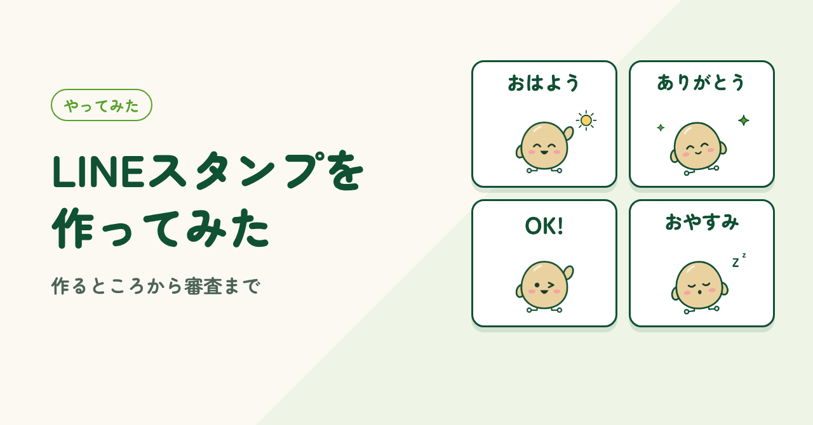
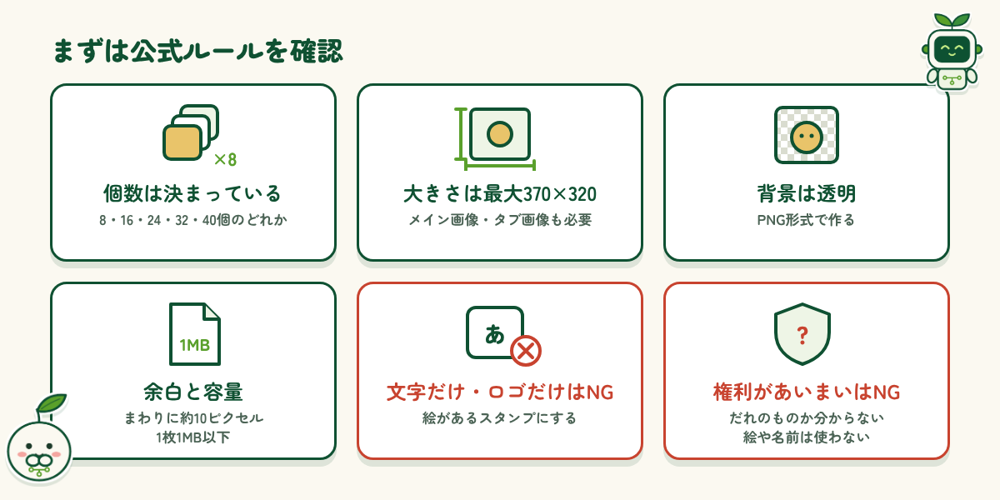
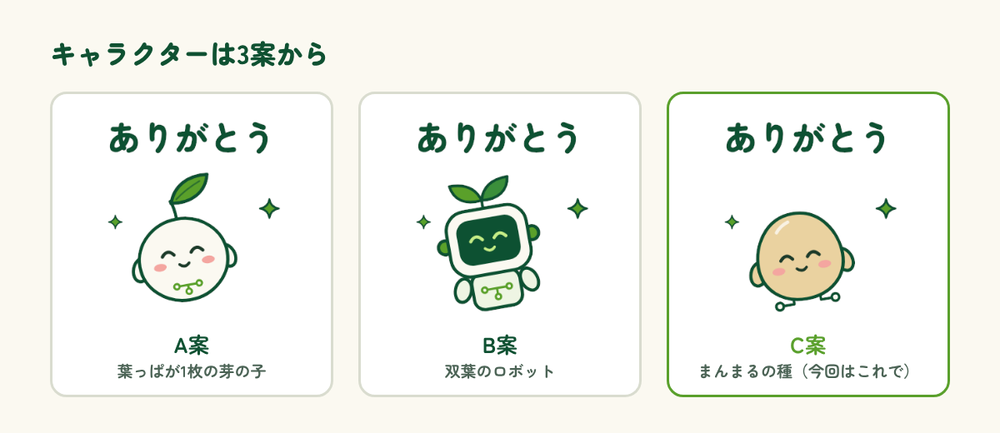
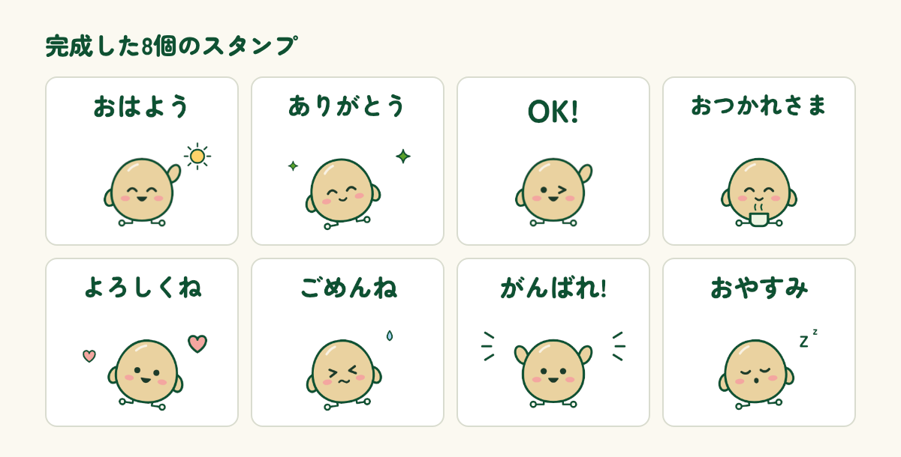
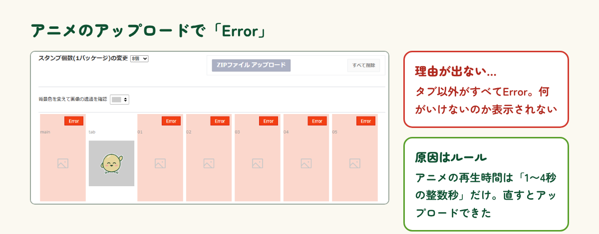
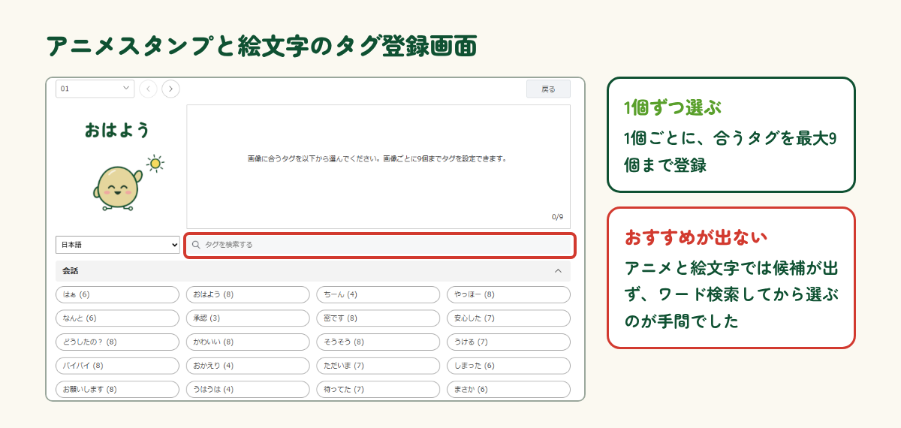

はじめに
副業として「LINEスタンプの作成・販売がおすすめ」という話をよく耳にします。でも、実際にどうやって作って、どうやって売るのかは、やってみないと分かりません。どんなスタンプが売れやすいのかも気になります。そこで今回は、売ること自体よりも、作るところから審査・販売までの流れを一通り試してみることにしました。この記事では、実際にやってみて分かったことや、つまずいたところを紹介します。
まずルールを調べる
まずは、LINE Creators Market の公式ガイドラインで、スタンプのルールを確認しました。大まかには次のとおりです。
- 1セットの個数は 8・16・24・32・40個 のどれか
- スタンプ画像は最大 370×320ピクセル、PNG形式で背景は透明
- ほかに、メイン画像（240×240）とトークルームタブ画像（96×74）が必要
- 画像のまわりに約10ピクセルの余白、1枚1MB以下
- 文字だけ・ロゴだけのスタンプはNG
- 他人の権利を侵害するもの、権利の所在がはっきりしないものはNG
出典: LINE Creators Market 制作ガイドライン（creator.line.me/ja/guideline/sticker/）

キャラクターを決める
次はキャラクターです。双葉や芽をモチーフに3案を作ってもらい、どれもかわいくて迷いました。名前も一緒に決めたかったのですが、しっくりくる名前ほど、すでにあるキャラクターや会社の名前と重なっていました。後から困らないよう、名前決めはいったん後回しに。まずは流れを試すことが目的なので、3案のうちC案の「まんまるの種」1キャラで進めることにしました。（A案・B案のキャラのスタンプもいずれ作りたい！）（その後、名前は『マルタネ』に決まりました。名前の決め方は別の記事で紹介します。）

静止画8個を作る
1キャラで、静止画のスタンプを8個作りました。言葉は「おはよう」「ありがとう」「OK!」「おつかれさま」「よろしくね」「ごめんね」「がんばれ!」「おやすみ」と、毎日のやりとりでよく使うものを選んでいます。表情や小物を少しずつ変えて、トーク画面でも見やすいように仕上げました。並べてみると、思った以上にうまくできていて、自分でも使ってみたいと思いました。

アニメと絵文字にも挑戦
せっかくなので、動くアニメーションスタンプと絵文字も8個ずつ作りました。ところが、アニメはアップロードすると「Error」と出るだけで、何がいけないのか教えてくれません。最初は原因が分からず苦戦しました。AIと一緒に公式のルールを読み直すと、アニメの再生時間は「1〜4秒の整数秒」でなければならないと分かりました。無事にアップロードできて一安心。AIのおかげです！

審査に出す
作ったスタンプは、静止画・アニメ・絵文字の3種類とも審査に出しました。申請では、タイトルや説明文、販売価格などを入力し、AIを使って作ったかどうかを申告する欄もあります。審査の流れは、一度やってみればそこまで難しくありません。面倒だと感じたのはタグの登録です。スタンプ1個ごとに、トークで変換候補に出すためのタグを選びます。静止画ではおすすめのタグが表示されますが、アニメーションスタンプと絵文字では出てこず、ワード検索してから候補を選ぶ必要があり、手間がかかりました。静止画とアニメのスタンプは無事に審査に通り、販売が始まりました。絵文字はいまも審査中です。

まとめ
一通りやってみて、LINEスタンプ作りは、一度キャラクターを決めてしまえば意外と簡単だと感じました。ルールを確認して、絵を作り、申請してタグを付ける。最初はつまずいたところも、2回目からは迷わず進められそうです。売れるかどうかは、まだ分かりません。販売のその後も、分かったらまた紹介したいと思います。副業として気になっている方は、まずは8個から試してみてはいかがでしょうか。
制作メモ
段落の構成と文章の下書きはAI（Claude）と作り、各段落に自分の感想を入れて、1段落ずつ確認・修正しました。